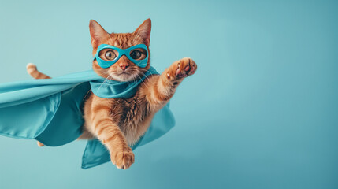
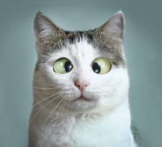

Maine Coon and Persian
Maine Coon cats are one of the largest and most recognizable domestic cat breeds, known for their long, shaggy coats and bushy tails. They originated in North America and are often called “gentle giants” because of their friendly and affectionate personalities. Maine Coons are highly intelligent, social, and playful, making them great companions for families and other pets. Their thick fur helps them adapt to colder climates, and they usually require regular grooming to prevent matting. Despite their large size, they are gentle, patient, and known for their dog-like behaviors, such as following their owners around and enjoying interactive play.
Persian cats, on the other hand, are admired for their luxurious long coats, flat faces, and calm, quiet nature. They are one of the oldest and most popular cat breeds, often associated with elegance and a relaxed lifestyle. Unlike the active Maine Coon, Persian cats tend to prefer peaceful environments and enjoy lounging rather than energetic play. Their long fur requires daily grooming to keep it clean and tangle-free, and their facial structure means they may need extra care, such as regular eye cleaning. Persian cats are affectionate and loyal, forming strong bonds with their owners while maintaining a gentle and laid-back personality.
Other Breeds
- American Longhair
- American Shorthair
- Ragdoll
- Bobtail
- Munchkin


